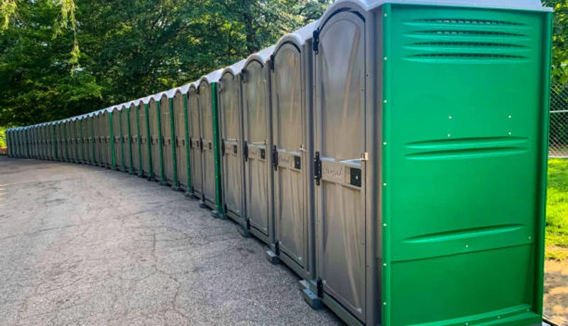

Event Planning
Porta Potty Guide for Laredo Festivals
Hosting an event in Downtown Laredo during peak season? Learn exactly how many portable restrooms you need to keep guests happy in the heat.
From Permian Basin drilling pads to Lamar Bruni Vergara Planetarium industrial complexes and Downtown Laredo commercial builds, Laredo's energy sector demands portable sanitation that's OSHA-certified and ready for remote sites. We deliver same-day to Webb County job sites — standard units, ADA, luxury trailers, and holding tanks. No forms, no call centers. Just results.
Bypass automated phone trees. Speak directly to our local bilingual dispatch team right now to secure units for your site.
No forms. No callbacks. Talk to a real dispatcher right now and lock in delivery.
Not sure how many units? Use our free porta potty calculator.
From San Bernardo to South Laredo, our fleet ensures rapid delivery to any zip code.
Every single unit goes through a rigorous multi-point sanitization process before delivery.
Servicio completo en inglés y español para servir mejor a nuestra comunidad.
We carry comprehensive liability insurance and ensure your site meets Texas TCEQ regulations.
From wellsite porta potties at remote Webb County oil fields to large-scale construction on Downtown Laredo and North Laredo industrial corridors, we carry the full range of portable sanitation equipment for Laredo's demanding energy and construction sectors. Every unit is OSHA-compliant and serviced on your schedule.

OSHA-certified portable restrooms for Downtown Laredo and North Laredo construction in Webb County. Worker-to-toilet ratio documentation included with every Laredo order. Weekly servicing on your Webb County job site schedule.

VIP trailers with A/C, granite countertops, and LED lighting for Laredo events near Lamar Bruni Vergara Planetarium. Available with same-day delivery throughout Webb County and North Laredo venues.

Budget-friendly Laredo standard units delivered same-day to Downtown Laredo and North Laredo in Webb County. Weekly service and OSHA compliance documentation included for all Laredo orders.

Wheelchair-accessible units for Webb County construction and Laredo public gatherings. Extra turning radius, grab bars, and accessible seat height — ANSI A117.1 compliant for North Laredo events.

Standalone hand wash stations for Laredo food events and Webb County construction near Lamar Bruni Vergara Planetarium. Fresh water tank, soap, paper towels — essential for Downtown Laredo and North Laredo events.

Flushable porta potties for Laredo events where guest comfort matters near Downtown Laredo and North Laredo. Real flush, fresh water, cleaner interior — available same-day throughout Webb County.

Climate-controlled event trailers for Laredo festivals and Lamar Bruni Vergara Planetarium-area gatherings in Webb County. Multiple stall configurations for crowds from 100 to 5,000+ at Downtown Laredo venues.

Designed specifically for multi-story commercial developments in Downtown Laredo. These units feature integrated, heavy-duty steel slings allowing your crane operator to safely hoist sanitation directly to elevated floors, saving time and maximizing site efficiency.

Marble countertops, LED lighting, stainless fixtures, and climate control — the gold standard for Laredo galas and Lamar Bruni Vergara Planetarium-area VIP events in Webb County. Every guest is impressed.

Upgraded Laredo units with interior lighting, larger tanks, and improved ventilation. A step above standard — ideal for Downtown Laredo events and multi-week Webb County construction projects.

Septic pump-out and holding tank service for Laredo construction sites in Webb County. Emergency pumping for Downtown Laredo and North Laredo properties — 24/7 availability from our Laredo team.

After-hours emergency porta potty service for Webb County: Downtown Laredo construction emergencies, North Laredo event backup, Del Mar last-minute project starts. Laredo same-night delivery available.
Not sure what your site needs? Use this quick comparison guide to find the perfect sanitation solution for your guest count and event type.
| Unit Type | Best For | Key Features | Capacity (Approx) |
|---|---|---|---|
| Standard Porta Potty | Construction, Casual Events, Parks | Ventilated, Urinal, Hand Sanitizer | 1 per 10 workers / 50 guests |
| Flushable VIP Unit | Corporate Picnics, Backyards | Foot-pump flush, Hidden Waste, Sink | 1 per 40 guests |
| ADA Compliant Unit | Public Festivals, Code Compliance | Ground level access, Grab bars, Oversized | Required 1 per 20 std. units |
| Luxury Trailer (2-10 Stalls) | Quinceañeras, VIP Areas, Film Sets | A/C, Running Water, Porcelain Toilets, Lights | 150 - 800+ guests |
Heavy-duty construction units for Laredo job sites — serving Downtown Laredo, North Laredo, and remote Webb County work sites. OSHA documentation provided on request. Same-day delivery available.
Call for Expert Sizing →Navigating Webb County regulations is critical to avoid fines and project delays. Our logistics team handles the placement strategy to keep your site 100% legal.

We believe in transparent, upfront pricing with zero hidden fees. While exact costs fluctuate based on inventory and season, your rental price in Webb County is determined by three main factors:
A standard event unit is our most affordable option, while multi-stall luxury AC trailers command a premium. Bulk orders for large sites receive scaled pricing.
Event units are typically billed on a flat weekend rate. Construction rentals in Laredo are billed on a recurring 28-day cycle.
One cleaning per week is standard. For high-traffic warehouse sites where adding more units isn't physically possible, we can schedule twice-weekly pumping.
Want an exact number for your project?
Call our local dispatchers. It takes less than 2 minutes to get a binding quote.
Call →
Operating a successful event or managing a commercial job site in Webb County comes with unique logistical challenges. At the top of that list is providing safe, sanitary, and reliable portable toilet rental in Laredo. Whether you are expanding a massive logistics warehouse off Mines Road or organizing a beautiful outdoor Quinceañera in Del Mar, standardizing your sanitation strategy is not optional—it’s mandatory for health, safety, and comfort.
The extreme summer heat in South Texas accelerates bacteria growth and intensifies odors inside portable restrooms. If you are searching for an affordable porta potty rental in Laredo, TX, you must ensure the provider utilizes heavy-duty deodorizers. We counteract the heat by deploying industrial-grade blue solution and performing rigorous, hospital-grade cleaning during every pump-out. From same day porta potty rental in Laredo to scheduled long-term maintenance, our units arrive pristine and stay that way.
Laredo is the largest inland port of entry in the United States, meaning construction and logistics are always booming. Managing a fast-paced commercial build requires OSHA compliant porta potty rental in Laredo, TX. We provide rugged construction porta potty rental units equipped with proper ventilation and structural integrity to withstand heavy use. Furthermore, we supply mandatory construction site hand wash stations to ensure your crew remains healthy and your site passes local Webb County inspections without delay.
A special occasion shouldn't be remembered for poor restroom facilities. If you need a porta potty rental for weddings in Laredo, or specifically a high-end quinceañera porta potty rental, standard plastic units simply won't suffice for guests in formal wear. This is why we offer premium luxury porta potty rental for outdoor events. Our VIP restroom trailers feature air conditioning, running water, and elegant lighting, ensuring a comfortable experience regardless of the outdoor temperature.
"El mejor servicio de renta de baños portátiles en Laredo. Confíe en nuestros expertos para mantener su evento o sitio de construcción limpio y seguro."
Laredo is a dynamic Webb County community where construction activity, outdoor events, and residential growth create year-round demand for reliable portable sanitation. From the corridors near Lamar Bruni Vergara Planetarium to the neighborhoods of Downtown Laredo, North Laredo, and Del Mar, every part of Webb County has a reason to call FixPilot — construction sites, events, or emergency backup near World Trade International Bridge.
Our Laredo depot enables rapid same-day delivery to Downtown Laredo and all of Webb County.
Construction and event delivery to North Laredo — same-day available throughout Webb County.
Serving Del Mar residential and commercial projects with OSHA-certified units.
Luxury restroom trailers and standard units for events and construction in San Isidro.
Same-day delivery to South Laredo and all surrounding Webb County communities.
Serving contractors and event planners in Nuevo Laredo MX border and throughout Webb County.
Reliable porta potty service to Encinal, Downtown Laredo, and all of Webb County.
We also provide fast, reliable service to contractors and residents in these nearby Webb County communities:
*Prices may vary by duration and location in Webb County. Call for exact quote.
Get Your Free Laredo Quote2026 Rental Cost Guide
Standard, deluxe & luxury pricing explained
How Many Units Do You Need?
Calculate the right number for your event or site
OSHA Compliance Guide
Requirements for construction sites
Construction Site Services
OSHA-compliant units for job sites
Luxury Restroom Trailers
VIP-grade trailers for weddings & events
Free Quote Calculator
Get an instant estimate in 60 seconds
The portable sanitation market in Laredo operates at three scales simultaneously. At the large scale: multi-month construction contracts at Lamar Bruni Vergara Planetarium-adjacent commercial developments and infrastructure projects spanning Webb County's most active corridors — Downtown Laredo, North Laredo, and Del Mar. At the event scale: luxury restroom trailers for Laredo's wedding circuit near World Trade International Bridge and outdoor festivals in Downtown Laredo and San Isidro. At the residential scale: single-unit homeowner rentals throughout South Laredo and Webb County's established neighborhoods.
Webb County's construction activity shapes FixPilot's Laredo service more than any other factor. General contractors building near Lamar Bruni Vergara Planetarium, developers expanding into Del Mar and San Isidro, and infrastructure contractors working throughout North Laredo and South Laredo all need reliable OSHA-compliant portable sanitation delivered on a documented weekly schedule. Our Laredo team has learned the access protocols, permit requirements, and delivery windows for every active construction corridor in Webb County.
World Trade International Bridge and the surrounding Downtown Laredo entertainment district anchor Laredo's event sanitation segment. Corporate events, outdoor weddings, multi-day festivals, and private North Laredo gatherings throughout Webb County require premium restroom facilities that standard construction rental companies don't stock. FixPilot's Webb County event fleet — luxury trailers, deluxe units, ADA-compliant options — was built specifically for Laredo's quality-conscious event market.
Laredo's Webb County construction market is driven primarily by energy production, industrial construction, and oil and gas infrastructure centered around Lamar Bruni Vergara Planetarium and extending throughout the Downtown Laredo and North Laredo development corridors. Active job sites in Del Mar and San Isidro keep a consistent contractor workforce active in Webb County year-round, generating steady demand for OSHA-compliant portable restrooms with documented weekly service schedules. FixPilot maintains dedicated Webb County inventory to serve same-day construction deliveries to Downtown Laredo, North Laredo, and every active construction zone in the Laredo metro. The Lamar Bruni Vergara Planetarium corridor represents the highest-demand construction zone in Webb County, where projects range from commercial mixed-use development to infrastructure upgrades along the South Laredo perimeter.
Laredo's event market is anchored by annual gatherings near World Trade International Bridge and throughout the Downtown Laredo and Del Mar entertainment corridors in Webb County. The seasonal event calendar — outdoor concerts, community festivals, weddings at venues near Lamar Bruni Vergara Planetarium, and Webb County civic gatherings — creates consistent premium portable sanitation demand from spring through fall. Luxury restroom trailers for upscale North Laredo and San Isidro event venues, standard units for large Webb County community gatherings, and ADA-compliant options for public events near World Trade International Bridge are all part of FixPilot's Laredo event service offering. The growing outdoor wedding venue market in South Laredo and Del Mar reflects Laredo's emergence as a destination for outdoor celebrations throughout Webb County.
Contractors working in Downtown Laredo, event planners organizing gatherings near World Trade International Bridge, and homeowners in San Isidro and South Laredo managing Laredo renovation projects choose FixPilot over competitors because our Webb County-based operation delivers local expertise that national vendors cannot provide. We know the delivery windows, access requirements, and permit procedures for construction sites near Lamar Bruni Vergara Planetarium and throughout the North Laredo development corridor. Our Webb County dispatch team answers every call — no automated systems, no call centers routing your Laredo order through another state. Same-day delivery is standard, not a premium, for all of Webb County.
Crucial guides for event planning, Quinceañeras, and construction compliance in South Texas.
Hosting an event in Downtown Laredo during peak season? Learn exactly how many portable restrooms you need to keep guests happy in the heat.

Keep your massive commercial expansion compliant. We break down the exact protocols for handling high-volume worker sanitation in industrial zones.

Planning an elegant outdoor party? See why climate-controlled luxury trailers provide the ultimate comfort for guests in formal wear.

Avoid fines on your Webb County build. Learn exactly what OSHA demands for handwashing stations and sanitation capacity in extreme heat.
Porta Potty Rental in McAllen
Learn More →Porta Potty Rental in Corpus Christi
Learn More →Porta Potty Rental in McAllen
Learn More →Porta Potty Rental in Corpus Christi
Learn More →Real feedback from contractors, event planners, and local businesses across Webb County.
"We needed reliable construction porta potty rentals for a logistics warehouse expansion on Mines Road. Laredo Sanitation Solutions delivered rugged units and pumped them weekly without fail."
Javier M.
Project Manager
"Excelente servicio! Rentamos baños portátiles para la quinceañera de mi hija en South Laredo. Llegaron limpios, a tiempo, y el precio fue muy razonable."
Rosa G.
Local Resident
"Rented a luxury restroom trailer for an outdoor corporate event in Del Mar. The AC was ice cold, perfectly combating the South Texas heat. Highly recommend."
Michael C.
Event Coordinator
Real answers for Laredo customers. More questions? Call (833) 652-9344 anytime.
Our Laredo-based fleet delivers same-day to Downtown Laredo, North Laredo, Del Mar, and all of Webb County. Most Laredo orders placed before noon arrive by early afternoon. For construction site emergencies near Lamar Bruni Vergara Planetarium or last-minute event needs in San Isidro, our Webb County dispatch at (833) 652-9344 confirms a delivery window within minutes — 24/7.
Yes — Downtown Laredo, North Laredo, Del Mar, San Isidro, South Laredo, and the full extent of Webb County are on our regular delivery routes. Our Laredo drivers run these neighborhoods daily and can confirm same-day availability for any address in Webb County. Call (833) 652-9344 for immediate confirmation.
Federal OSHA 29 CFR 1926.51 requires one restroom per 20 workers per 8-hour shift at Laredo job sites. FixPilot provides OSHA compliance documentation automatically with every Webb County construction order — ratio calculations for your crew, service log templates, and positioning guidance for Downtown Laredo, North Laredo, and Del Mar project sites.
In Webb County, standard porta potties run $75–100/day with weekly service. Upgraded deluxe units are $100–150/day. ADA-compliant units for Laredo public events cost $120–160/day. Luxury restroom trailers for events near Lamar Bruni Vergara Planetarium or World Trade International Bridge start at $400/day. Multi-week Webb County construction contracts qualify for volume discounts. Call (833) 652-9344 for a precise Laredo project quote.
National chains route Webb County orders through centralized dispatch — meaning the person confirming your Laredo delivery has never driven Downtown Laredo or navigated North Laredo's access restrictions. FixPilot has its own drivers in Webb County who run Laredo routes daily. Our units leave our Webb County facility clean and arrive on time. That local difference shows in every delivery, every week.
Yes — large industrial crews near Lamar Bruni Vergara Planetarium and throughout Webb County are among our most common orders. A 200-worker Laredo crew needs 10 standard units per OSHA's 1:20 ratio, plus we recommend 1 ADA unit and 4 hand wash stations. We deliver to Downtown Laredo industrial corridors and remote Webb County sites with same-day service and full OSHA compliance documentation.
Yes — project-length contracts for Laredo and Webb County energy sector construction include locked daily rates, scheduled weekly service without reminders, and priority same-day add-on delivery when crew sizes increase. Industrial clients near Lamar Bruni Vergara Planetarium in Downtown Laredo and North Laredo also get a dedicated account contact and driver familiar with their Webb County site access procedures.
Yes — emergency delivery to World Trade International Bridge-area and all Webb County construction emergencies is available 24/7 at (833) 652-9344. Our Laredo fleet maintains after-hours inventory for same-night or early-morning deployment to Downtown Laredo, North Laredo, Del Mar, and remote Webb County industrial sites. Emergency service carries the same rate as standard Laredo service — no premium for urgency.
Yes — industrial and energy sector delivery near Lamar Bruni Vergara Planetarium and throughout Webb County is a core part of our operation. We serve remote wellpad locations, pipeline corridor projects, and refinery maintenance sites across Webb County with the same reliability we provide to downtown Laredo construction. OSHA documentation, TWIC-compliant drivers when required, and same-day delivery to Downtown Laredo and North Laredo industrial zones.
Absolutely. Webb County's energy sector construction — wellpads near Lamar Bruni Vergara Planetarium, pipeline work in Del Mar, and industrial facility maintenance throughout San Isidro and South Laredo — requires portable sanitation vendors with remote-access capability. Our Laredo fleet serves Webb County industrial sites with OSHA documentation, durable construction-grade units, and weekly or more frequent servicing depending on crew size.
Yes — projects and events near Lamar Bruni Vergara Planetarium are among our most regular Webb County deliveries. Our Laredo drivers know the delivery windows, vehicle access requirements, and site coordination protocols for the Lamar Bruni Vergara Planetarium area. Same-day delivery is standard for Webb County locations near Lamar Bruni Vergara Planetarium across Downtown Laredo and North Laredo. Call (833) 652-9344 for immediate availability confirmation.
World Trade International Bridge and the surrounding Del Mar corridor are a regular part of our Laredo service calendar. We've provided construction porta potties and luxury restroom trailers for events ranging from small private gatherings to large public events near World Trade International Bridge in Webb County. Delivery timing, access coordination, and permit guidance for World Trade International Bridge-area projects are handled by our Laredo team.
Our Laredo emergency line (833) 652-9344 is answered live 24/7 — including nights, weekends, and holidays. Our Webb County on-call driver covers Downtown Laredo, North Laredo, Del Mar, and the full Laredo metro for after-hours emergencies. Whether it's a Lamar Bruni Vergara Planetarium-area construction inspection failure or a last-minute event backup in San Isidro, we dispatch immediately with no premium for after-hours service.